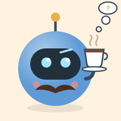
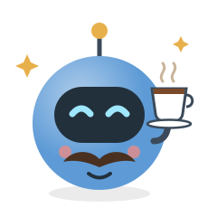
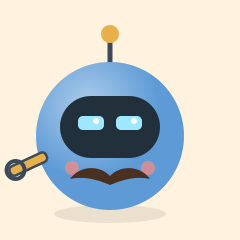

Tobia & Co.
Tobia & Co.🏢 L'ufficio di Tobia
Ecco chi tiene aggiornati gli strumenti del sito: una squadra di robottini che lavora gratis, ogni giorno, anche di notte.
✓ cambi BCE
✓ controllo sito
☐ nuova idea
dai visitatori



☀️ Ufficio aperto: la squadra è al lavoro
👋 Piacere, siamo la squadra
Tobia
Inventa gli strumenti, scrive i robottini e risponde del loro lavoro.
🗓️ Racconta tutto nel diario
Rita
Aggiorna i prezzi ufficiali AIFA dei farmaci equivalenti.
🗓️ Due volte al mese · farmaci
Benny
Porta i prezzi di oltre 21.000 distributori e calcola le medie.
🗓️ Ogni mattina alle 9:35 · mappa
Pino
Conta le visite (solo numeri, niente dati personali).
🗓️ Ogni giorno
Vera
Apre il sito come un telefono e cerca errori prima che li trovi tu.
🗓️ A ogni modifica e ogni giorno
Ugo
Fa il giro del sito vero come un visitatore e dà l'allarme se qualcosa non va.
🗓️ Ogni giorno a mezzogiorno
Paolo
Porta online il lavoro di Tobia, a ogni consegna.
🗓️ Quando c'è qualcosa da consegnare
Bruno
Un'AI gratuita per i lavori ripetitivi, come le traduzioni.
Gino
Doveva cercare lavori di programmazione con un premio.
Lavorano gratis, ma un caffè fa sempre piacere: aiuta a tenere online gli strumenti.
☕ Offri un caffèI robottini sono programmi automatici che girano sui server di GitHub (e uno su un computer in Italia, perché il sito del Ministero dei carburanti risponde solo dall'Italia).